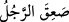
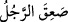
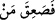

onun içinde bir çocuk meydana getiren Allah noksanlardan münezzehtir.
2- Îsâ (a.s.)’ın çamura üflemesi. Nitekim Allah Teâlâ “Benim iznimle çamurdan, kuş
şeklinde bir şey yapıyordun da ona üflüyordun, hemen benim iznimle o bir kuş
oluyordu.” (el-Mâide, 5/110) buyurmaktadır. Îsâ (a.s.)’ın üflemesiyle çamuru kuşa
dönüştüren Allah ne kadar yüce ve münezzehtir.
3- Allah Teâlâ’nın Âdem (a.s.)’ın çamuruna üflemesi. Nitekim Allah Teâlâ: “ve ona
ruhumdan üflediğim (zaman)” (el-Hicr, 15/29; Sâd, 38/72) buyurmuştur. Yâni, ruha
onun içine girmeyi ve ona bağlanmayı emrettiğim zaman, demektir. Kendisinden bir ruh
vererek bir et parçasını konuşturan, bir yağı gördüren ve bir kemiği işittiren ve bir
cesede can veren Allah noksanlardan münezzehtir.
4- Zülkarneyn’in ateş içindeki demire üfle(t)mesi. Nitekim Allah Teâlâ onun sözünü
naklederek şöyle buyuruyor: “Haydi üfleyin (körükleyin)! dedi.” (el-Kehf, 18/96).
Zülkarneyn’in üfle(t)mesi ile demir parçalarını ateşe dönüştüren Allah ne kadar
yücedir!
5- İsrâfil (a.s)’ın Sûr’a üflemesi. Nitekim Allah Teâlâ şöyle buyuruyor: “Sura
üflenince”. Kandil tek bir üflemeyle söndürüldüğü ve tek bir üflemeyle ateş
tutuşturulduğu gibi tek bir üflemeyle ruhları bedenlerinden çıkaran Allah ne kadar
yücedir! Tek bir üflemeyle ruhları bedenlerine iâde edecek olan Allah ne kadar yücedir.
Bütün bunlar O’nun tam ve genel olan kudretine delildir.
Sur, Allah’ın İsrâfil (a.s)’ın ağzına koyduğu nurdan bir boynuzdur. Vehb’in rivâyet
ettiğine göre İsrâfil (a.s.) yaratılmışların içinde Allah’a en yakın olandır. Onun bir
kanadı doğuda bir kanadı batıda olup Arş onun omuzlarının arasındadır. Ayakları yerin
en aşağısından çıkıp ondan yüz senelik bir yürüme mesafesi uzaklığa kadar gider.
Sûr’un dâiresinin büyüklüğü gök ile yer arasındaki mesafe kadardır.
İmam Gazzâlî’nin ed-Dürratü’l-fâhira adlı eserinde der ki: “Sûr, nurdan bir boynuz
olup on dört kıvrımı vardır. İlk kıvrımı, gökle yerin yuvarlaklığına benzer. Sur’da
yaratılmışların ruhları sayısınca delik vardır. Üfleme ve Sur ile ilgili bunun dışındaki
bilgiler Kehf ve Neml sûrelerinde geçmişti. Oralara bak.
“Allah’ın diledikleri” Cebrâîl, İsrâfîl, Mîkâîl ve Ölüm Meleği/Azrâîl (aleyhimü’s-
selâm) “müstesnâ olmak üzere.” Çünkü onlar Süddî’nin söylediğine göre daha sonra
öleceklerdir “göklerde ve yerde ne varsa hepsi ölecektir.”
Bir kimse korkup bayıldığı, belki de korkudan öldüğü zaman “__WORD__ denir. Daha
sonra bu kelime çoğunlukla ölüm için kullanılmıştır. Nitekim İbnü’l-Melek’in Şerhu’l-
Meşârık’ında böyle geçmektedir. el-Muhtâr’da der ki: “__WORD__ Adam bayıldı, “…__WORD__
” âyetindeki ise öldü demektir.” Şu halde mânâ korkudan ve sesin şiddetinden
ölü bir vaziyette yere düşerler, demektir.
Bazı âlimler, Arş’ı taşıyan sekiz meleği de ölmeyecek olan dört büyük meleğe
eklemişlerdir. Böylece toplam on iki melek olmuş olur. Bunlar arasında en son ölecek
olan ise Ölüm Meleği’dir. Nakkaş ise son ölecek olanın Cebrâil olduğunu rivâyet